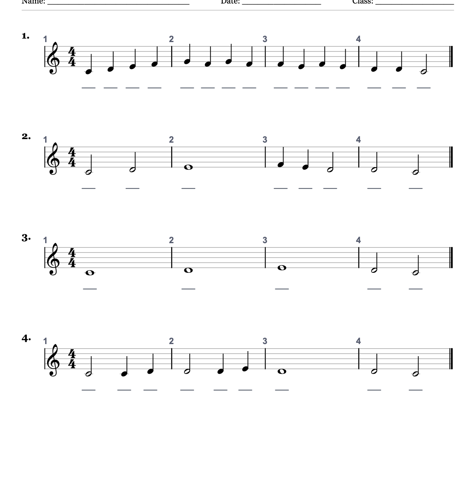
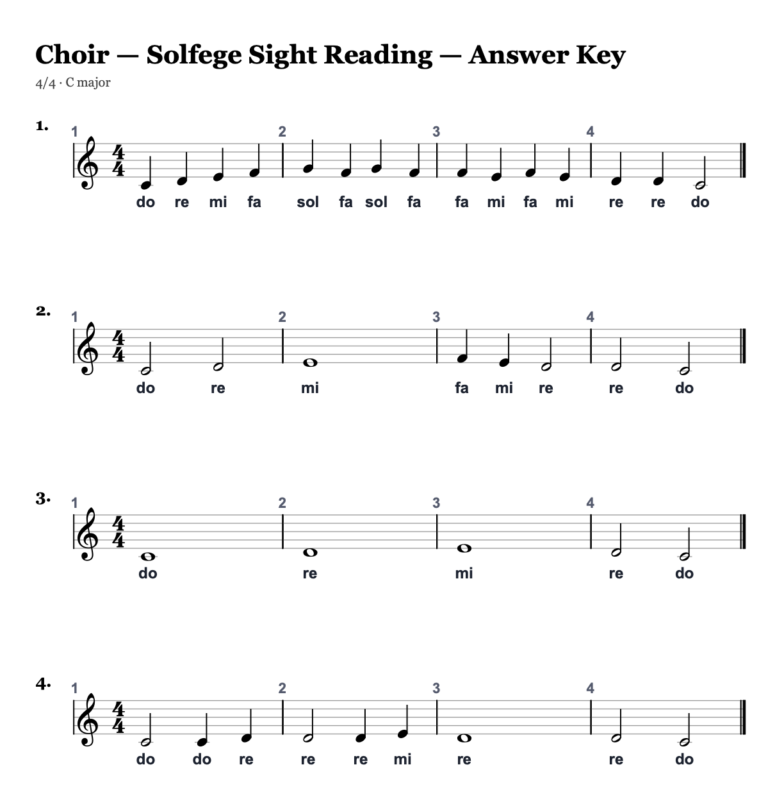

Already on when your students walk in.
Your whole rehearsal room in one free app.
Everything you use in rehearsal, on one classroom screen. Works offline, no account needed in the Mac and Windows apps, free for classroom use.
- Bell-schedule classes
- Tuner & drone
- Metronome
- Solfege board
- Piano & warm-ups
- Sight reading with grading
- Score playback
- Online homework (optional)
Free for classroom use · Works offline · Your files stay on your device · No account needed in the Mac and Windows apps · Web version: teacher sign-in
On a Chromebook or iPad, use Open web version (it is the full app) and add it to your home screen. Supported devices
Try it right here
This is the real Rehearsal, running in your browser. Nothing you play or sing is uploaded.
The free app adds difficulty levels, keys, clefs, counting systems, worksheets and your own scores. Download it
Built for the rehearsal room, not the practice room at home
Other software drills students at home and asks you to check a dashboard later. Rehearsal is for the moment you’re standing in front of the ensemble.
Set your bell schedule once and the screen follows it. Project a solfege ladder or a warm-up, tune the clarinets in their own transposition, loop the tricky four bars while you listen. Between classes it shows what’s next and a countdown. No account needed in the Mac and Windows apps, no waiting on Wi-Fi.
- Classes follow your bell schedule, each with its own agenda and tabs
- Solfege ladder with Curwen hand signs, and 12 warm-up patterns that climb by half steps on their own
- Tuner and drone for Concert, B-flat, E-flat and F instruments
- Loops, count-ins and speed-up on each repeat for any MusicXML score
- Print a sub plan for any day: schedule, notes, agenda and roster
Print it, project it, assign it: the same exercise
Generate a rhythm or solfege exercise once, then use it three ways.
Generate and project
Put the exercise on the classroom screen, big enough for the back row.
Print the worksheet
Print 1, 2, 3, 4 or 6 exercises on a worksheet, with an answer key on page 2.
Assign as homework
One Assign button sends it to Online Homework. Students record at home and get graded.


To give each group its own level, change the level, key or clef and print another set.
How Online Homework works →Fair grading, in plain numbers
When Rehearsal grades a take, the student sees why: which notes drifted, which beats rushed, and how much leeway the grade allowed.
- Rhythm and pitch are scored and shown separately, not just one number
- You set the leeway with a slider: from about ±250 to ±40 ms for timing, and ±100 to ±25 cents for pitch
- A singer who is steadily late isn’t marked wrong note by note
- Listen back with the recording lined up against the beat
- Grade singing with the mic, or tap rhythms on a keyboard or iPad
Built to clear a district review
If your district reviews every tool, hand them this page first.
The classroom app collects nothing
The Mac and Windows apps need no account. Your classes, schedules and files stay on your device. In the web version, your settings and classes are backed up to your teacher account (files stay in the browser). No ads, no analytics or tracking scripts, and student data is never sold. It works offline.
Online Homework stores only what a gradebook needs
A student name or alias, a sign-in code, optional email, scores, and short recordings. Audio on our server is deleted automatically after 90 days; scores stay. Accounts are only for Online Homework.
How accounts work
The Mac and Windows apps need no account. The web version asks teachers to sign in with Google or an email code, so settings and classes are backed up to their account. Online Homework uses the same sign-in. Library files (scores, PDFs) stay in the browser, so use Export now and then.
Replace three subscriptions with one screen
Tuner, metronome, sight reading, a homework tool and a classroom projector screen, in one app.
Who it’s for
Choir directors
Movable-do solfege with Curwen hand signs, 12 warm-up patterns, and mic grading for sight singing. Project the solfege ladder, run the warm-up, grade the examples.
Band and orchestra directors
Tuner and drone for B-flat, E-flat and F instruments. Score Practice with loops and speed-up on each repeat. Tap grading on keyboards and iPads.
Teachers running mixed rooms
Print worksheet batches and change level, key or clef for each group. Track progress. Print a sub plan for any day, with schedule, notes and roster.
The rehearsal room, on one screen.